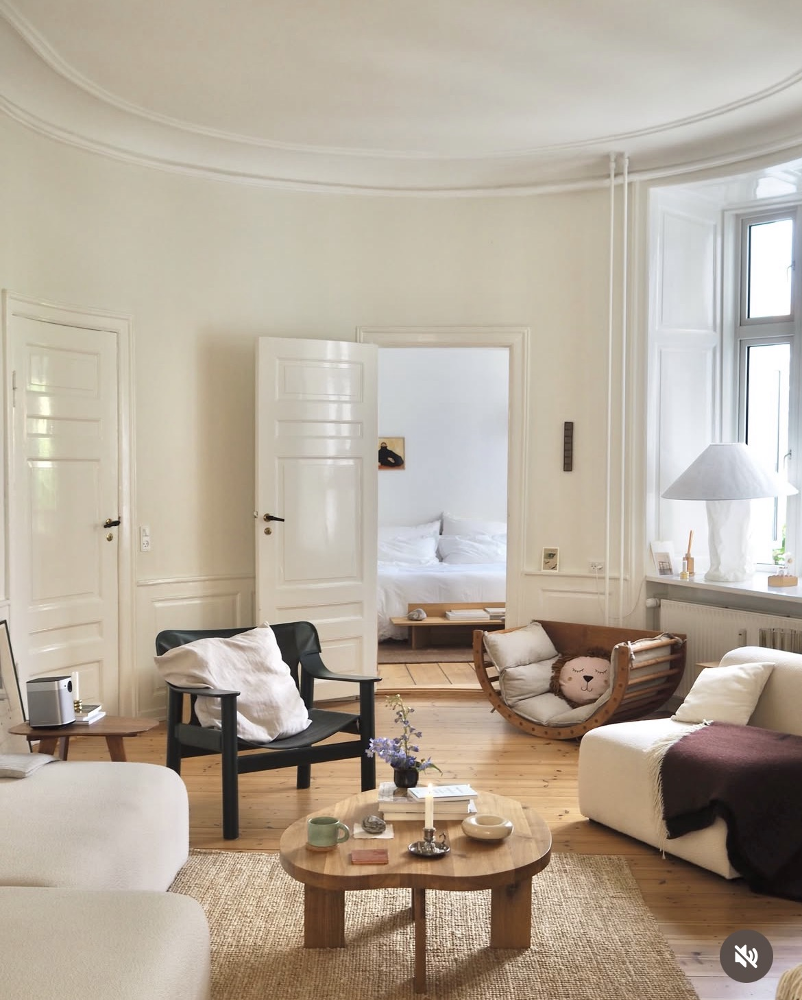
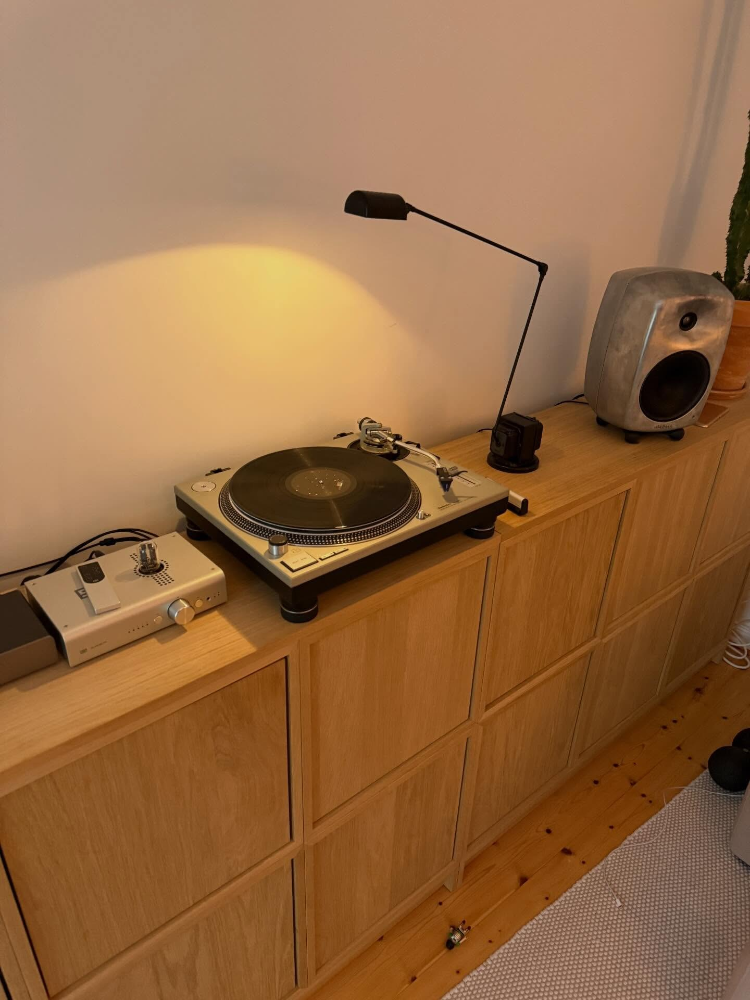
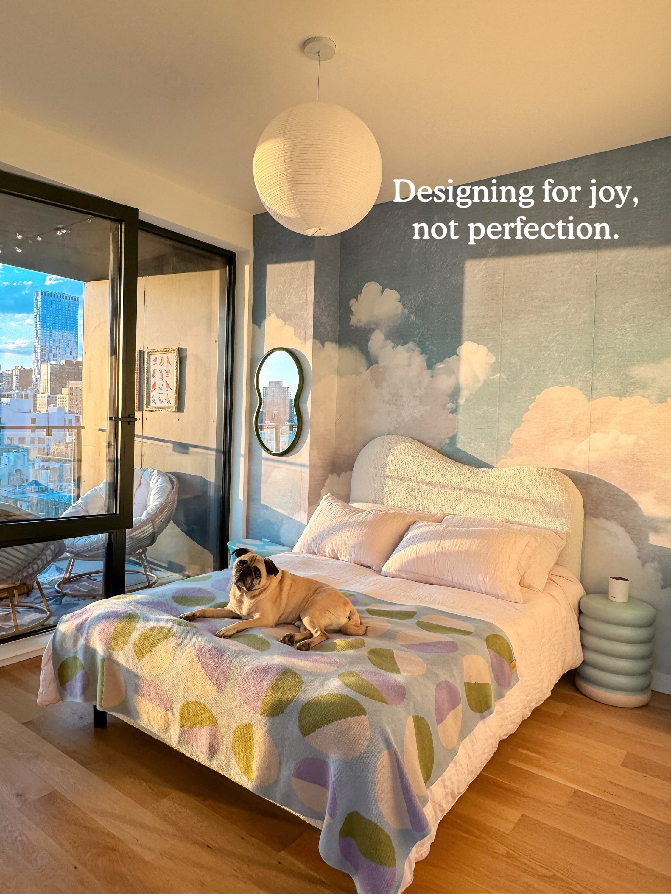
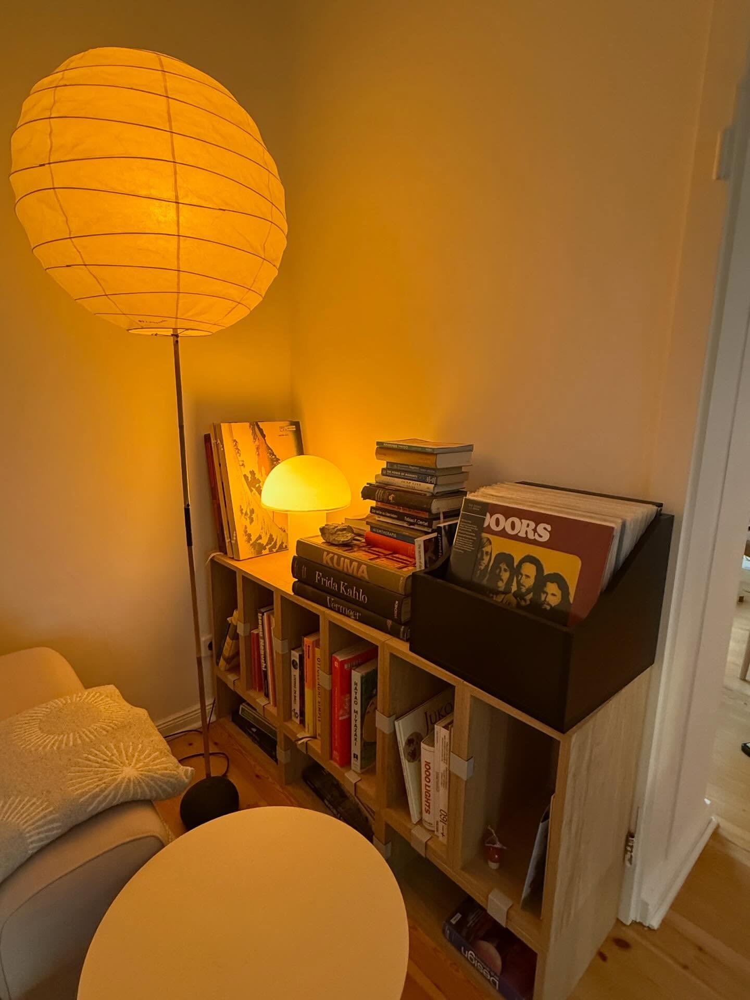
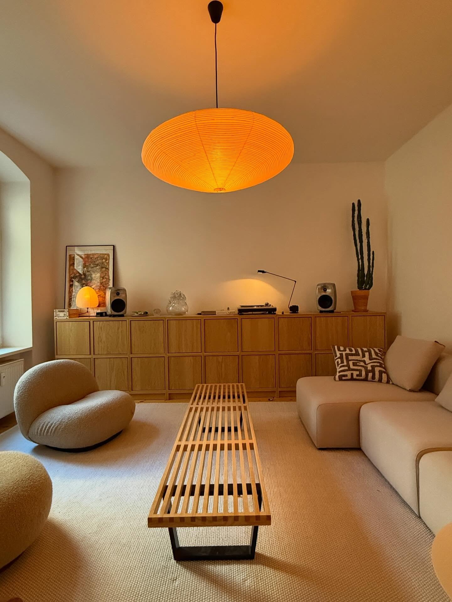
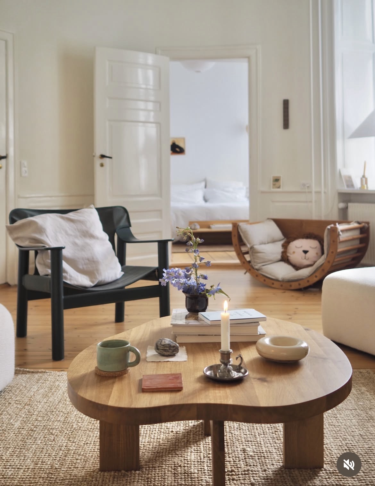
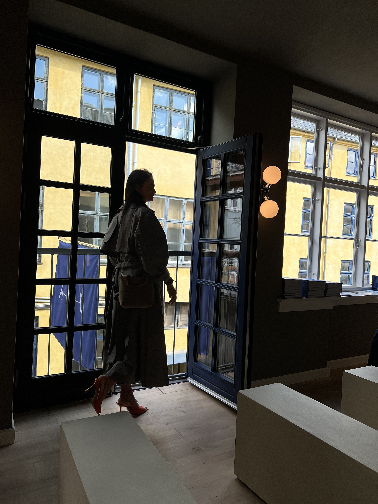
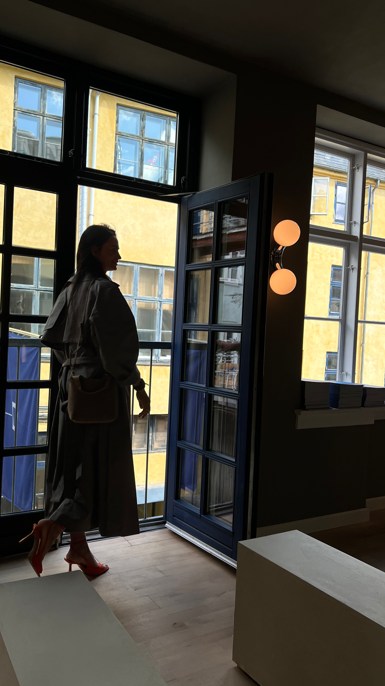
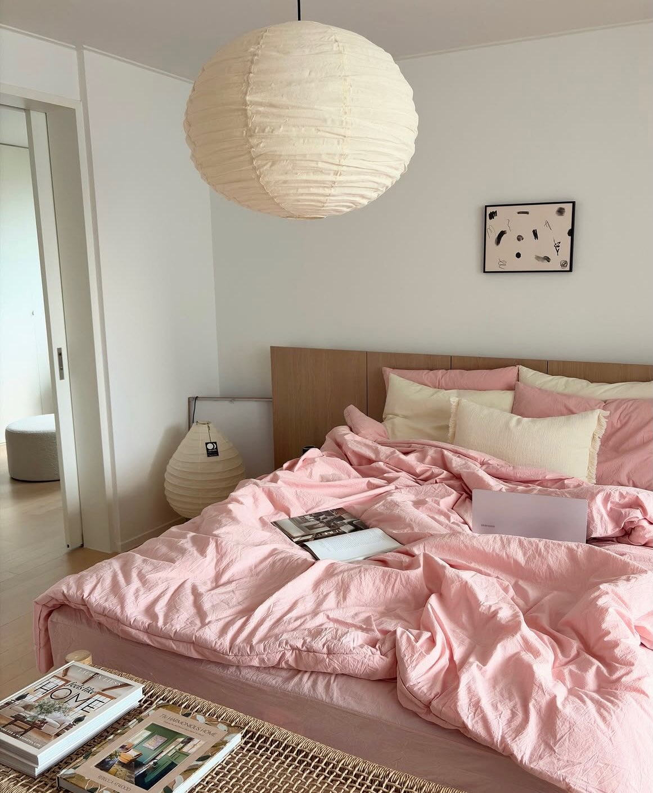
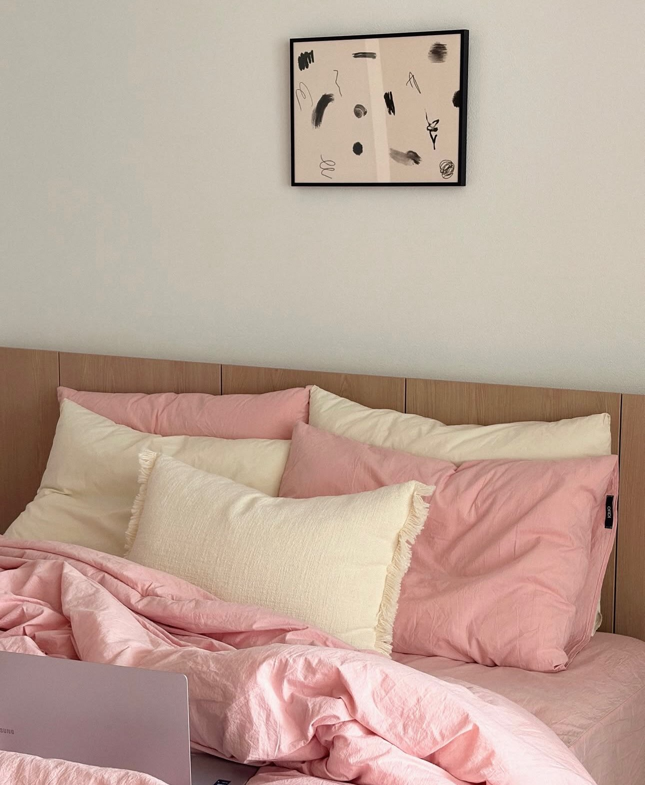

Чотири роки життя в Данії — і погляд на інтер’єр, який неможливо зібрати лише зі збережених фотографій.






Данський інтер’єр — це не стиль, який можна повторити за фотографією.
Він не починається з білих стін, дерев’яного стільця чи дизайнерської лампи. І не закінчується вибором правильного дивана. Данський дім складається з того, як людина проживає простір щодня: де вона п’є каву, яке світло вмикає ввечері, що бачить, прокидаючись, і які речі залишає навколо себе.
Саме тому два інтер’єри з однаковими меблями можуть відчуватися абсолютно по-різному. Атмосферу створюють пропорції, світло, порожній простір, колір, текстури й маленькі повсякденні речі — те, як усе це працює разом.


Я довго ловила себе на тому, що заглядаю у відкриті датські вікна. Не через цікавість до чужого життя. Мене захоплювали маленькі композиції, які датчани ніби залишають місту напоказ: лампа біля крісла, книги на кухні, кераміка, квіти, світло над столом.
Спочатку я просто дивилась. Потім почала помічати, що в абсолютно різних домівках повторюються ті самі закономірності. Світло ніколи не існує окремо від меблів. Предмети не розставлені випадково. Порожній простір має таку саму вагу, як речі. А дім виглядає красивим саме тому, що в ньому видно життя.
Я почала бачити систему там, де раніше бачила просто красиву картинку.
Світло створює не яскравість, а атмосферу й сценарії життя.
Правильний предмет неправильного масштабу може зруйнувати всю кімнату.
Не кожне місце потрібно заповнювати. Порожнеча дає інтер’єру повітря.

Речі, якими ми користуємося щодня, теж формують інтер’єр: постіль, полотенце у ванній, кухонний текстиль, чашки, ваза, книги, кавомашина.
Кавова зона, місце для читання чи світло біля ліжка перетворюють простір на особистий сценарій життя.

Чотири роки життя в Данії дали мені можливість бачити цей дизайн не в Pinterest, а в реальному житті. У квартирах, кафе, готелях, магазинах, шоурумах — у тому, як простір виглядає вранці, увечері та взимку, коли світло стає особливо важливим.
Three Days of Design, шоуруми та презентації нових колекцій поступово формували мій смак і професійну насмотреність. Я стежила за тим, як дизайнери працюють зі світлом, кольором, текстилем, меблями й речами щоденного користування — і збирала власний список брендів та предметів, до яких хочу повертатися у своїх концепціях.
Це не стилізація під Данію. Це досвід життя всередині неї.
Для нас інтер’єр не закінчується на меблях.
Постіль займає значну частину спальні. Рушник у ванній щодня знаходиться поруч із плиткою, змішувачем і світлом. Кухонний текстиль, чашки та кавомашина формують ранкову картинку дому.
Тому ми працюємо не лише з диванами, столами й кріслами. Ми дивимося на весь візуальний світ вашого дому — від світильника до постільної білизни й рушника для рук.
Усі ці спостереження мають сенс лише тоді, коли вони можуть працювати у реальному домі.
DANISH INTERIOR переносить цей погляд у ваш існуючий простір і створює готову візуальну концепцію — без необхідності починати новий ремонт.